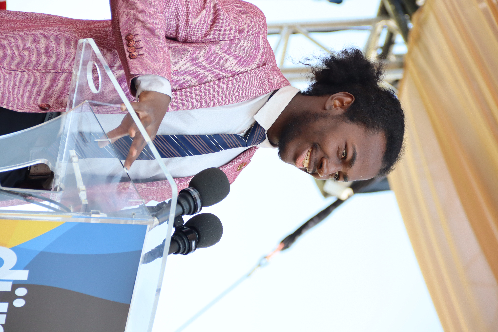

LEADERSHIP EN GESTION D'APPROVISIONNEMENT

Leader stratégique et visionnaire de NK International, İssakha Haki Zendi s'appuie sur plus de quatre années d’expérience solide dans le négoce d’équipements militaires et tactiques pour structurer des corridors d'approvisionnement sécurisés entre la Turquie et l'Afrique, garantissant une direction rigoureuse, une conformité stricte et une croissance durable de l'entreprise.

Fort de cinq années d'expertise dans l'intelligence économique et la négociation internationale, Moussa Doumbia pilote la prospection stratégique, l'analyse des opportunités régionales et la diplomatie d'affaires, nouant des alliances solides avec les investisseurs et partenaires clés pour accélérer le déploiement global de NK International.

Fort de trois années d’expérience rigoureuse dans la gestion financière, la planification budgétaire et le suivi des flux de trésorerie, Issa Djibo garantit la rentabilité et l’équilibre financier de NK International, pilotant avec précision l'allocation des ressources et la sécurisation des transactions commerciales internationales.

Fort de plus de quatre années d’expérience solide en gestion administrative, coordination institutionnelle et conformité réglementaire, Hamadoum Adama Dicko est le pilier opérationnel de NK International, veillant à la fluidité des processus internes, au respect des standards légaux les plus stricts et à l'alignement stratégique de l'ensemble des départements de l'entreprise.

Fort de deux années d’expérience dans la communication d'influence, le marketing numérique et les relations publiques, Moulaye Zene pilote l’image de marque et la visibilité stratégique de NK International, élaborant des campagnes percutantes, gérant les relations presse et assurant une présence médiatique soignée qui valorise le professionnalisme et la discrétion de l'entreprise.
POINT STRATÉGIQUE D'ASSURANCE ET DE FIABILITÉ
NK International est le partenaire B2B de confiance reliant l'excellence de la production turque aux besoins institutionnels du continent africain, avec une spécialisation dans les textiles militaires et les équipements tactiques.
Notre domaine d'expertise se concentre exclusivement sur la fourniture d'uniformes de haute qualité, d'accessoires de terrain et d'équipements de protection. Notre force réside dans la gestion précise de votre chaîne d'approvisionnement. En étroite collaboration avec nos partenaires logistiques experts, nous coordonnons l'exportation sécurisée de la Turquie vers l'Afrique, garantissant une livraison fiable, transparente et adaptée aux réalités du terrain.
Fournir des textiles militaires et des accessoires de terrain durables pour assurer la sécurité de votre personnel. Notre mission est de simplifier vos achats en Turquie grâce à une coordination rigoureuse de l'exportation avec nos partenaires logistiques.
Devenir le partenaire d'approvisionnement B2B le plus privilégié en Afrique de l'Ouest et dans la région du Sahel, reconnu pour la qualité de nos équipements tactiques turcs et l'excellence de notre réseau d'exportation.